Lección 2: De las cuentas de RNA-seq a la exploración de datos
Importación, normalización y visualización de los datos
2026-10-29
Source:vignettes/intro_RNAseq_es.Rmd
intro_RNAseq_es.RmdBienvenida
Esta lección es para ti si estás comenzando a analizar datos de transcriptómica (RNA-seq). Usaremos datos reales de mujeres mexicanas con lupus y de controles sanos para recorrer, paso a paso, el camino que va de una tabla de números a una interpretación biológica.
Lo que necesitas saber antes: lo básico de R (crear
objetos, usar funciones) y, si es posible, un poco de dplyr
y ggplot2. No necesitas saber de RNA-seq: lo explicamos
sobre la marcha.
Al terminar podrás:
- Explicar qué son una matriz de cuentas y una tabla de metadatos.
- Construir un objeto
DESeqDataSet, que es la estructura que usaDESeq2. - Explicar por qué hay que normalizar y
cómo lo hace
DESeq2. - Transformar los datos (VST) y explorarlos con gráficas de genes, heatmaps y PCA.
- Relacionar lo que ves en las gráficas con la biología del lupus.
Tiempo estimado: 1 a 1.5 horas.
Mapa de la lección
flowchart TB
subgraph pre["Ya hecho en el paquete"]
direction LR
A["Lecturas (FASTQ)"] -- "Salmon + tximport" --> B["filtered_txi
cuentas"]
M["metadata_cleaned
una fila por muestra"]
V["volunteer_info
una fila por voluntaria"]
end
subgraph lec["En esta lección"]
direction LR
C["DESeqDataSet"] --> D["Filtrado"] --> E["Normalización"] --> F["VST"] --> G["Exploración
genes · heatmap · PCA"]
end
pre --> lec
Glosario
Estos son los términos que usaremos. Vuelve aquí cada vez que lo necesites.
- Lectura (read): fragmento de RNA secuenciado.
- Cuenta: número de lecturas asignadas a un gen en una muestra.
- Matriz de cuentas: tabla de genes (filas) × muestras (columnas).
- Metadatos: información que describe a cada muestra.
- Tamaño de librería: total de lecturas de una muestra (profundidad de secuenciación).
- Normalización: corrección que hace comparables las muestras entre sí.
- VST: transformación tipo logaritmo que estabiliza la varianza.
- z-score: valor estandarizado de un gen (en desviaciones estándar respecto a su media).
- PCA: técnica que resume muchas variables en unos pocos ejes.
- Efecto de lote (batch effect): diferencias entre muestras causadas por cuándo o cómo se procesaron, no por la biología.
-
Columna llave: columna que comparten dos tablas y
que sirve para unirlas (aquí,
Volunteer_ID). - ISG (interferon-stimulated genes): genes que se encienden en respuesta al interferón.
- SLEDAI (SLE Disease Activity Index): puntaje de actividad del lupus; más alto = enfermedad más activa.
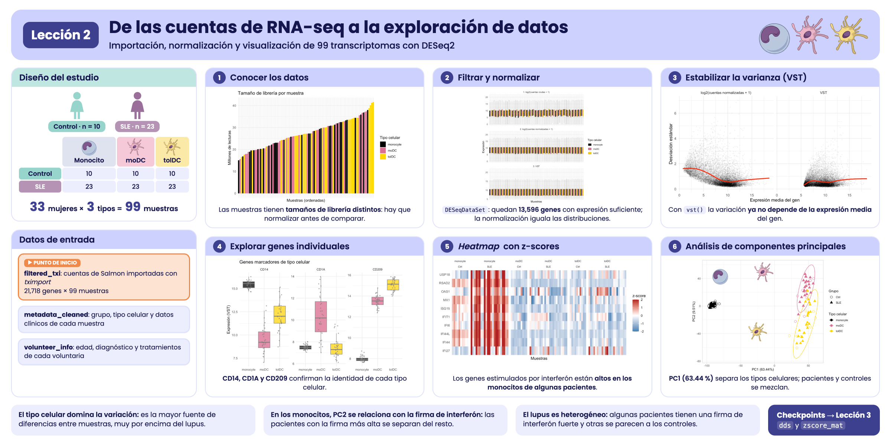
Resumen visual de la lección 2.
1. Contexto biológico: ¿qué estamos estudiando?
El lupus eritematoso sistémico (LES, o SLE en inglés) es una enfermedad autoinmune: el sistema inmune ataca por error los tejidos del propio cuerpo. Afecta sobre todo a mujeres (alrededor de 9 de cada 10 casos). Uno de sus rasgos moleculares más conocidos es la firma de interferón: en las pacientes se encienden muchos genes que normalmente responden a infecciones virales, llamados genes estimulados por interferón (ISG).
En este estudio se analizaron tres tipos de células del sistema inmune:
-
Monocitos (
monocyte): células que circulan en la sangre. Se obtuvieron directamente de cada participante. -
Células dendríticas derivadas de monocitos
(
moDC): se obtienen al cultivar los monocitos con GM-CSF e IL-4. Son “activadoras”, porque presentan antígenos y encienden la respuesta inmune. -
Células dendríticas tolerogénicas
(
tolDC): se obtienen al cultivar los monocitos con GM-CSF e IL-10. Su papel es “calmar” la respuesta inmune y promover la tolerancia.
Diseño del estudio: participaron 33 mujeres
mexicanas, 10 controles sanas (Ctrl) y 23 pacientes con
lupus (SLE). De cada una se obtuvieron los tres tipos
celulares, lo que da 33 × 3 = 99 muestras. Las
voluntarias se reclutaron entre junio de 2022 y febrero de 2023. Los
datos provienen del artículo:
Hernández-Ledesma AL, Coss-Navarrete EL, et al (2026) Gene expression profiling of dendritic cell tolerance dysfunction in women with systemic lupus erythematosus. Front. Immunol. 17:1771959. doi: 10.3389/fimmu.2026.1771959.
Nuestra pregunta guía: ¿cambia la expresión de los genes en estas células cuando una persona tiene lupus?
2. RNA-seq en dos minutos
- Se extrae el RNA de las células. Cada gen activo produce copias de RNA: cuanto más activo, más copias.
- El RNA se fragmenta y se secuencia. Cada fragmento leído se llama lectura (read).
- Un programa (aquí, Salmon) identifica a qué gen pertenece cada lectura y las cuenta.
El resultado es una tabla: cuántas lecturas tiene cada gen en cada muestra. A esa tabla la llamamos matriz de cuentas. Más lecturas significa más expresión, pero solo en términos relativos, como veremos en la sección de normalización.
Buena noticia: los pasos más pesados (alinear las
lecturas con Salmon e importarlas con tximport) ya están
hechos. El paquete incluye el resultado listo para analizar.
3. Preparación
Instalación
Instala el paquete desde GitHub y
DESeq2 desde Bioconductor. Solo
necesitas hacerlo una vez.
install.packages(c("remotes", "BiocManager", "tidyverse"))
remotes::install_github("EveliaCoss/GeneExprLupusMx")
BiocManager::install("DESeq2")Cargar los paquetes
library(GeneExprLupusMx) # nuestros datos
library(DESeq2) # normalización y análisis de RNA-seq
library(tidyverse) # manipulación de tablas (dplyr) y gráficas (ggplot2)
library(ggrepel) # etiquetas que no se enciman en ggplot2
library(cowplot) # unir varias gráficas en un panelEl orden importa. DESeq2 y
dplyr tienen funciones con el mismo nombre (por ejemplo,
count() y select()). R usa la del último
paquete cargado; por eso cargamos tidyverse al final. Si
tienes dudas, escribe el paquete explícitamente:
dplyr::count().
Definimos los colores que usaremos en todas las gráficas, para que cada tipo celular y cada grupo tengan siempre el mismo color:
4. Paso 1: conocer los datos
Antes de analizar cualquier cosa hay que mirar los datos. Este paso evita la mayoría de los errores.
4.1 La matriz de cuentas: filtered_txi
filtered_txi es una lista con varias matrices. La más
importante es counts:
names(filtered_txi)
#> [1] "abundance" "counts" "length"
#> [4] "countsFromAbundance"
dim(filtered_txi$counts) # genes x muestras
#> [1] 21718 99
filtered_txi$counts[1:5, 1:4]
#> QR011_0 QR011_1 QR011_3 QR013_0
#> A1BG 179.000 134.000 401.000 163.000
#> A1BG-AS1 69.977 76.949 205.607 76.942
#> A1CF 0.000 0.000 0.000 0.000
#> A2M 16.000 27777.937 3700.000 29.584
#> A2M-AS1 11.000 14.063 12.000 24.416-
Filas = genes (21,718 genes, identificados por su
símbolo, por ejemplo
A2M). -
Columnas = muestras (99). El nombre de cada muestra
tiene dos partes:
QR011_1= pacienteQR011, tipo celular1(_0= monocito,_1= moDC,_3= tolDC).
Observa dos detalles:
-
Hay números con decimales. Salmon estima
las cuentas, porque algunas lecturas podrían venir de más de un gen. No
hay que redondearlas a mano:
DESeq2lo hará por nosotros. - Hay muchos ceros. ¿Qué proporción de la tabla es cero?
mean(filtered_txi$counts == 0)
#> [1] 0.3492151Y los valores son muy desiguales. Veamos la primera muestra:
summary(filtered_txi$counts[, 1])
#> Min. 1st Qu. Median Mean 3rd Qu. Max.
#> 0.0 0.0 30.0 873.3 514.8 432335.0La mitad de los genes tiene pocas lecturas y unos cuantos tienen cientos de miles. Esta desigualdad será importante más adelante.
4.2 Los metadatos: metadata_cleaned
Los metadatos describen quién es cada muestra: su grupo, tipo celular, edad, tratamiento, actividad de la enfermedad, etc.
metadata_cleaned %>%
dplyr::select(sample_ID, Group, Cell_type, Age, GC, SLEDAI_category) %>%
head()
#> sample_ID Group Cell_type Age GC SLEDAI_category
#> QR011_0 QR011_0 Ctrl monocyte 25 No Zero
#> QR011_1 QR011_1 Ctrl moDC 25 No Zero
#> QR011_3 QR011_3 Ctrl tolDC 25 No Zero
#> QR013_0 QR013_0 Ctrl monocyte 23 No Zero
#> QR013_1 QR013_1 Ctrl moDC 23 No Zero
#> QR013_3 QR013_3 Ctrl tolDC 23 No Zero¿Cuántas muestras hay de cada combinación?
metadata_cleaned %>%
dplyr::count(Group, Cell_type)
#> Group Cell_type n
#> 1 Ctrl moDC 10
#> 2 Ctrl monocyte 10
#> 3 Ctrl tolDC 10
#> 4 SLE moDC 23
#> 5 SLE monocyte 23
#> 6 SLE tolDC 23Las tres muestras de una misma paciente no son
independientes: comparten su genética, su edad y su historia
clínica. Guardemos el identificador de cada voluntaria en una columna
Volunteer_ID:
4.3 ¿Coinciden las cuentas y los metadatos?
Es la comprobación más importante de todo el análisis: la columna 1 de la matriz de cuentas debe corresponder a la fila 1 de los metadatos, la 2 a la 2, y así sucesivamente. Si el orden no coincide, todas las conclusiones serán falsas y R no te avisará.
TRUE: podemos continuar.
Reto 1. ¿Cuántas pacientes con lupus tienen nefritis (daño renal)? Pista: cada paciente aparece tres veces; filtra un solo tipo celular antes de contar.
4.4 La información de cada voluntaria:
volunteer_info
metadata_cleaned tiene una fila por
muestra. Pero hay datos que pertenecen a la
persona, no a la muestra: cuándo fue reclutada, cuántos
años lleva con el diagnóstico o qué tratamientos recibe. Si los
pusiéramos en metadata_cleaned, cada dato aparecería
repetido tres veces. Por eso viven en otra tabla,
volunteer_info, con una fila por
voluntaria. Si hiciste la lección Conociendo a las participantes, ya la
conoces:
dim(volunteer_info) # 33 voluntarias
#> [1] 33 16
head(volunteer_info)
#> Volunteer_ID Volunteer Group Age_years Years_with_diagnosis
#> 1 QR011 1 Ctrl 25 NA
#> 2 QR013 2 Ctrl 23 NA
#> 3 QR014 3 SLE 32 5
#> 4 QR017 4 SLE 22 4
#> 5 QR020 5 SLE 42 5
#> 6 QR021 6 SLE 23 4
#> Age_at_diagnosis_years SLEDAI Nephritis Treatment_GCC GCC_drug GCC_dose_mg
#> 1 NA NA <NA> NA <NA> NA
#> 2 NA NA <NA> NA <NA> NA
#> 3 27 1 Yes TRUE PDN 5
#> 4 18 1 No TRUE PDN 8
#> 5 37 0 No FALSE <NA> NA
#> 6 19 0 No FALSE <NA> NA
#> Treatment_AM Treatment_MMF Treatment_AZT Treatment_MTT Time_of_recruitment
#> 1 NA NA NA NA 2022-06-01
#> 2 NA NA NA NA 2022-06-01
#> 3 TRUE TRUE FALSE FALSE 2022-06-01
#> 4 FALSE FALSE FALSE FALSE 2022-06-01
#> 5 TRUE FALSE TRUE FALSE 2022-06-01
#> 6 FALSE FALSE FALSE FALSE 2022-06-01Las dos tablas comparten la columna Volunteer_ID. Es la
columna llave: nos permitirá unirlas cuando lo
necesitemos (lo harás en el Reto 4).
Con esta tabla, el Reto 1 se resuelve en una línea, porque cada persona aparece una sola vez:
volunteer_info %>%
dplyr::count(Group, Nephritis)
#> Group Nephritis n
#> 1 Ctrl <NA> 10
#> 2 SLE No 20
#> 3 SLE Yes 3¿Cuántas voluntarias se reclutaron cada mes?
volunteer_info %>%
mutate(Recruitment = format(Time_of_recruitment, "%Y-%m")) %>% # "2022-06", "2022-07", ...
dplyr::count(Recruitment, Group) %>%
pivot_wider(names_from = Group, values_from = n, values_fill = 0)
#> # A tibble: 8 × 3
#> Recruitment Ctrl SLE
#> <chr> <int> <int>
#> 1 2022-06 2 4
#> 2 2022-07 0 1
#> 3 2022-08 3 1
#> 4 2022-09 0 1
#> 5 2022-10 1 4
#> 6 2022-12 1 1
#> 7 2023-01 2 10
#> 8 2023-02 1 1Fíjate en enero de 2023: se reclutaron 10 pacientes y solo 2 controles. Recuerda este detalle; volveremos a él en el PCA.
5. Paso 2: crear el objeto
DESeqDataSet
DESeq2 guarda todo en un solo objeto, como un
expediente con tres partes:
| Parte | Qué contiene | Cómo verla |
|---|---|---|
| Cuentas | La matriz genes × muestras | counts(dds) |
| Metadatos | La información de cada muestra | colData(dds) |
| Diseño | Qué variables explican las diferencias | design(dds) |
Antes de crearlo elegimos los niveles de referencia,
es decir, contra qué comparamos. Lo natural es comparar contra los
controles sanos (Ctrl) y contra los monocitos, la célula de
origen.
metadata_cleaned$Group <- relevel(metadata_cleaned$Group, ref = "Ctrl")
metadata_cleaned$Cell_type <- relevel(metadata_cleaned$Cell_type, ref = "monocyte")
dds <- DESeqDataSetFromTximport(txi = filtered_txi,
colData = metadata_cleaned,
design = ~ Cell_type + Group)
dds
#> class: DESeqDataSet
#> dim: 21718 99
#> metadata(1): version
#> assays(2): counts avgTxLength
#> rownames(21718): A1BG A1BG-AS1 ... ZZEF1 ZZZ3
#> rowData names(0):
#> colnames(99): QR011_0 QR011_1 ... QR108_1 QR108_3
#> colData names(15): sample_ID Group ... SLEDAI_category Volunteer_IDLa fórmula ~ Cell_type + Group se lee: “la expresión
de cada gen depende del tipo celular y del grupo (lupus o
control)”.
Al usar DESeqDataSetFromTximport() aparece el mensaje
using counts and average transcript lengths from tximport.
Significa que DESeq2 también guardó la longitud de
los transcritos de cada gen en cada muestra y la usará al
normalizar.
6. Paso 3: filtrar los genes poco expresados
Un gen con 0 o 2 lecturas en casi todas las muestras no aporta información: es ruido. Lo quitamos.
Regla: conservamos los genes con al menos 10 lecturas en al menos 10 muestras. Elegimos 10 muestras porque es el tamaño del grupo más pequeño (10 controles por tipo celular). Así no descartamos un gen que solo se exprese en ese grupo.
7. Paso 4: normalización
7.1 ¿Por qué hay que normalizar?
Imagina dos muestras con un mismo gen X:
tibble(sample = c("A", "B"),
total_reads = c(10e6, 20e6),
geneX_reads = c(100, 200)) %>%
mutate(geneX_per_million = geneX_reads / total_reads * 1e6)
#> # A tibble: 2 × 4
#> sample total_reads geneX_reads geneX_per_million
#> <chr> <dbl> <dbl> <dbl>
#> 1 A 10000000 100 10
#> 2 B 20000000 200 10La muestra B tiene el doble de lecturas del gen X, pero también se secuenció el doble. Una vez corregido, el gen X se expresa igual en las dos. Esa corrección es la normalización.
¿Varía mucho la profundidad de secuenciación en nuestros datos?
tibble(sample_ID = colnames(dds),
million_reads = colSums(counts(dds)) / 1e6,
Cell_type = dds$Cell_type) %>%
ggplot(aes(x = reorder(sample_ID, million_reads), y = million_reads, fill = Cell_type)) +
geom_col() +
scale_fill_manual(values = cell_color) +
labs(x = "Muestras (ordenadas)", y = "Millones de lecturas", fill = "Tipo celular",
title = "Tamaño de librería por muestra") +
theme_minimal() +
theme(axis.text.x = element_blank())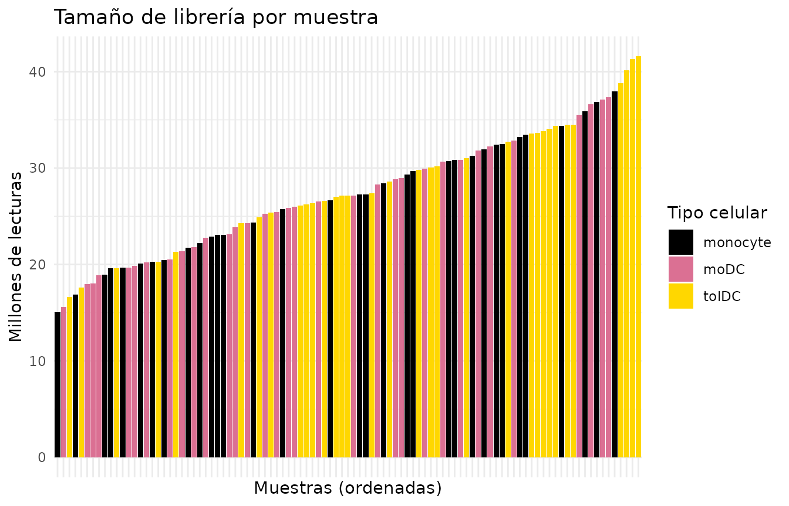
Sí: algunas muestras tienen varias veces más lecturas que otras. Sin normalizar, compararíamos profundidad de secuenciación, no biología.
7.2 ¿Cómo normaliza DESeq2?
DESeq2 usa el método de la mediana de las
razones. En palabras sencillas:
- Para cada gen calcula una muestra “promedio” de referencia (la media geométrica de todas las muestras).
- Divide cada muestra entre esa referencia, gen por gen.
- La mediana de esas divisiones es el factor de normalización de la muestra. Usar la mediana evita que unos pocos genes muy expresados distorsionen el resultado.
Con datos de tximport hay un detalle extra: además de la
profundidad, se corrige la longitud de los transcritos,
que puede variar entre muestras. Por eso, en lugar de un solo número por
muestra (sizeFactors), DESeq2 guarda una tabla
de factores gen × muestra (normalizationFactors).
dds <- estimateSizeFactors(dds)
sizeFactors(dds) # NULL: con tximport no se usa
#> NULL
normalizationFactors(dds)[1:4, 1:4] # factores gen x muestra
#> QR011_0 QR011_1 QR011_3 QR013_0
#> A1BG 0.7292214 0.7590954 0.9675822 0.8422480
#> A1BG-AS1 0.7301966 0.7591523 0.9701181 0.8427474
#> A2M 0.7285477 0.7554575 0.9710304 0.9000925
#> A2M-AS1 0.7302545 0.7590955 0.9703467 0.8427377Con los factores calculados ya podemos obtener las cuentas normalizadas:
norm_counts <- counts(dds, normalized = TRUE)
norm_counts[1:4, 1:4]
#> QR011_0 QR011_1 QR011_3 QR013_0
#> A1BG 245.46729 176.5259 414.43509 193.52969
#> A1BG-AS1 95.86459 101.4289 212.34528 91.36783
#> A2M 21.96150 36769.7731 3810.38550 33.32991
#> A2M-AS1 15.06324 18.4430 12.36671 28.47861Importante: las cuentas normalizadas sirven para
comparar y graficar. Para el análisis de expresión
diferencial (DESeq()) siempre se usan las cuentas
crudas, porque DESeq2 aplica la normalización
internamente. Nunca le pases cuentas ya normalizadas.
8. Paso 5: transformación estabilizadora de la varianza (VST)
8.1 ¿Por qué otra transformación?
Las cuentas normalizadas todavía tienen un problema: los genes muy expresados varían mucho más que los poco expresados, solo por su escala. Si hiciéramos un PCA o un heatmap con ellas, unos cuantos genes muy abundantes dominarían el resultado.
La solución es usar una escala logarítmica. Pero
log2(x + 1) exagera el ruido de los genes con pocas
cuentas. La VST (variance stabilizing
transformation) es un logaritmo “inteligente” que corrige eso.
vsd <- vst(dds, blind = FALSE)
assay(vsd)[1:4, 1:4] # valores en escala aproximadamente log2
#> QR011_0 QR011_1 QR011_3 QR013_0
#> A1BG 8.335329 7.980506 8.947756 8.076851
#> A1BG-AS1 7.396740 7.446462 8.176147 7.355095
#> A2M 6.400719 15.169477 11.926583 6.626424
#> A2M-AS1 6.229470 6.317794 6.150936 6.536546¿blind = TRUE o
blind = FALSE? Con blind = FALSE, la
transformación conoce el diseño (~ Cell_type + Group) y no
confunde las diferencias biológicas esperadas con ruido. Es lo
recomendado para gráficas y análisis posteriores. Usa
blind = TRUE si quieres una exploración que no sepa nada
del diseño, por ejemplo, para control de calidad.
Comprobémoslo: la gráfica muestra, para cada gen, su expresión media (eje x) contra su desviación estándar (eje y). Lo ideal es una línea plana: que la variabilidad no dependa de cuánto se expresa el gen.
mean_vs_sd <- function(mat, label) {
tibble(mean = rowMeans(mat), sd = apply(mat, 1, sd), scale = label)
}
bind_rows(mean_vs_sd(log2(norm_counts + 1), "log2(cuentas normalizadas + 1)"),
mean_vs_sd(assay(vsd), "VST")) %>%
ggplot(aes(x = mean, y = sd)) +
geom_point(alpha = 0.05, size = 0.4) +
geom_smooth(color = "red", se = FALSE) +
facet_wrap(~ scale) +
labs(x = "Expresión media del gen", y = "Desviación estándar") +
theme_minimal()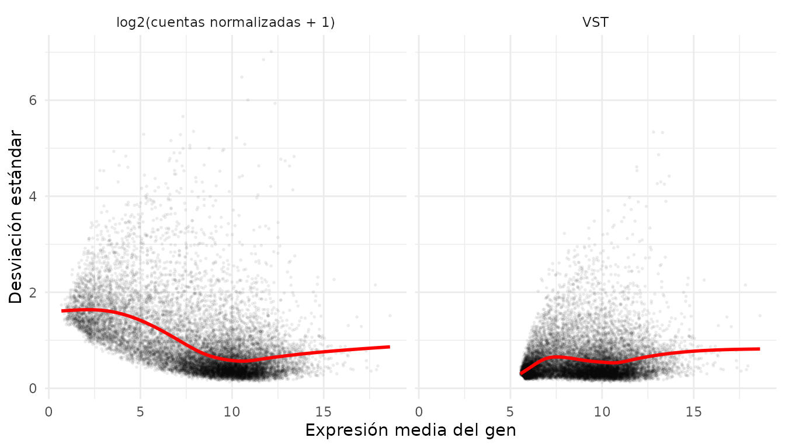
Con log2(x + 1), los genes de baja expresión (izquierda)
tienen una variabilidad inflada. Con VST la línea roja queda más
plana.
8.2 ¿Funcionó la normalización?
Si todo salió bien, las distribuciones de todas las muestras deben quedar alineadas. Cada caja es una muestra:
to_long <- function(mat, stage) {
as.data.frame(mat) %>%
rownames_to_column("gene") %>%
pivot_longer(-gene, names_to = "sample_ID", values_to = "value") %>%
mutate(stage = stage)
}
bind_rows(to_long(log2(counts(dds) + 1), "1. log2(cuentas crudas + 1)"),
to_long(log2(norm_counts + 1), "2. log2(cuentas normalizadas + 1)"),
to_long(assay(vsd), "3. VST")) %>%
left_join(metadata_cleaned, by = "sample_ID") %>%
ggplot(aes(x = sample_ID, y = value, fill = Cell_type)) +
geom_boxplot(outlier.shape = NA, linewidth = 0.2, color = "grey50") + # contorno gris: visible sobre el negro
facet_wrap(~ stage, ncol = 1, scales = "free_y") +
scale_fill_manual(values = cell_color) +
labs(x = "Muestras", y = "Expresión", fill = "Tipo celular") +
theme_minimal() +
theme(axis.text.x = element_blank())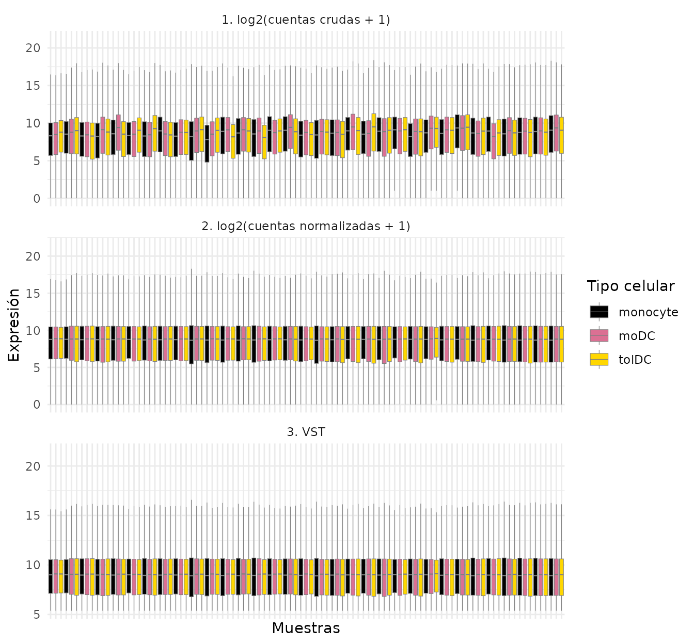
En el panel 1 las cajas suben y bajan de una muestra a otra; en los paneles 2 y 3 quedan a la misma altura. La normalización funcionó.
9. Paso 6: explorar genes individuales
9.1 ¿Tienen sentido biológico los datos?
Antes de buscar algo nuevo, comprueba algo que ya sabes. Si los datos son buenos, los genes marcadores de cada tipo celular deben comportarse como se espera:
- CD14: marcador clásico de monocitos.
- CD1A y CD209 (DC-SIGN): marcadores de células dendríticas.
Primero preparamos una tabla en formato largo con la expresión VST y
los metadatos. Es el formato que prefiere ggplot2:
expr_long <- to_long(assay(vsd), "VST") %>%
dplyr::select(gene, sample_ID, expression = value) %>%
left_join(metadata_cleaned, by = "sample_ID")
head(expr_long)
#> # A tibble: 6 × 17
#> gene sample_ID expression Group GC Dose Dose_category Age Cell_type
#> <chr> <chr> <dbl> <fct> <fct> <fct> <fct> <fct> <fct>
#> 1 A1BG QR011_0 8.34 Ctrl No 0 0 25 monocyte
#> 2 A1BG QR011_1 7.98 Ctrl No 0 0 25 moDC
#> 3 A1BG QR011_3 8.95 Ctrl No 0 0 25 tolDC
#> 4 A1BG QR013_0 8.08 Ctrl No 0 0 23 monocyte
#> 5 A1BG QR013_1 8.25 Ctrl No 0 0 23 moDC
#> 6 A1BG QR013_3 8.18 Ctrl No 0 0 23 tolDC
#> # ℹ 8 more variables: Group_age <fct>, Nephritis <fct>, Other_tx <fct>,
#> # Sledai_score <fct>, Sledai_group <fct>, SLEDAI_Md <fct>,
#> # SLEDAI_category <fct>, Volunteer_ID <fct>
expr_long %>%
filter(gene %in% c("CD14", "CD1A", "CD209")) %>%
ggplot(aes(x = Cell_type, y = expression, fill = Cell_type)) +
geom_boxplot(outlier.shape = NA, alpha = 0.8, color = "grey50") +
geom_jitter(width = 0.15, size = 0.8, alpha = 0.6, color = "grey50") +
facet_wrap(~ gene, scales = "free_y") +
scale_fill_manual(values = cell_color) +
labs(x = NULL, y = "Expresión (VST)", title = "Genes marcadores de tipo celular") +
theme_minimal() +
theme(legend.position = "none")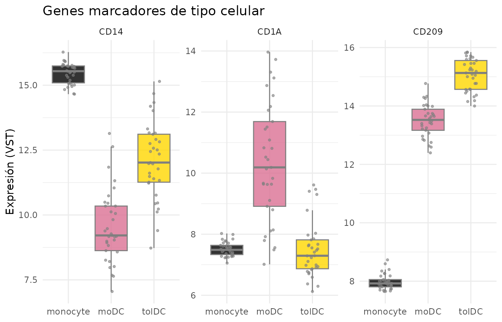
CD14 es alto en monocitos y CD1A en moDC,
tal como esperábamos. Los datos tienen sentido.
9.2 La firma de interferón en lupus
Ahora sí, la pregunta del estudio. Veamos cuatro genes estimulados por interferón (ISG) reportados en el artículo: IFI27, IFI44L, USP18 e IFI6.
isg <- c("IFI27", "IFI44L", "USP18", "IFI6")
expr_long %>%
filter(gene %in% isg) %>%
ggplot(aes(x = Cell_type, y = expression, fill = Group)) +
geom_boxplot(outlier.shape = NA, alpha = 0.8) +
geom_point(position = position_jitterdodge(jitter.width = 0.15), size = 0.7, alpha = 0.6) +
facet_wrap(~ gene, scales = "free_y") +
scale_fill_manual(values = group_color) +
labs(x = NULL, y = "Expresión (VST)", fill = "Grupo",
title = "Genes estimulados por interferón") +
theme_minimal()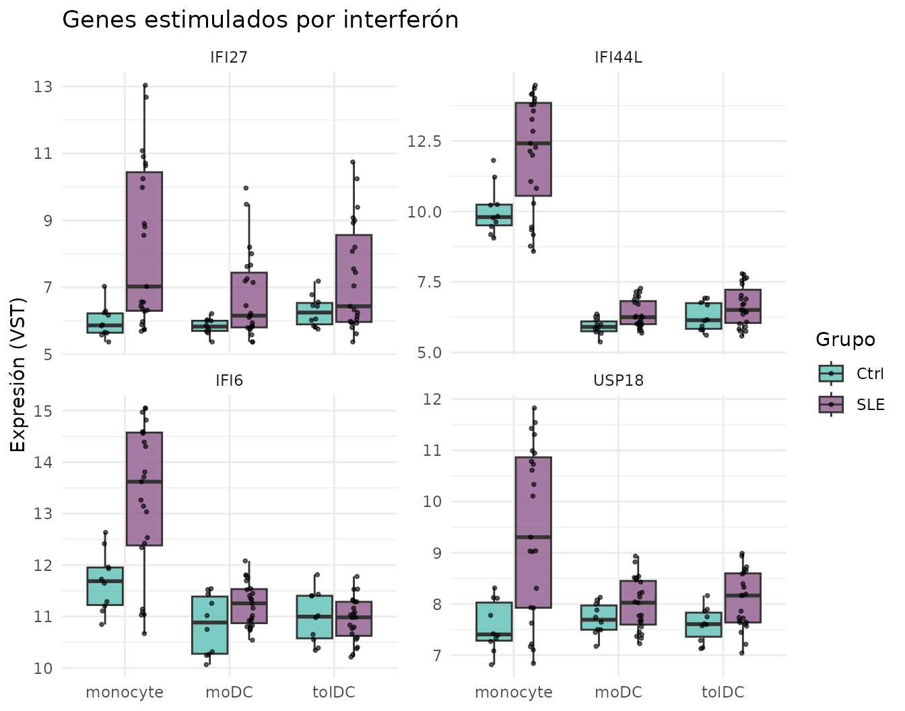
¿Qué observas? En los monocitos, las pacientes con lupus (lila) expresan más estos genes que los controles (verde agua). Fíjate también en que los puntos de las pacientes están muy dispersos: algunas pacientes tienen valores muy altos y otras, valores parecidos a los controles. En moDC y tolDC la diferencia es mucho menor: al diferenciarse in vitro, lejos del ambiente inflamatorio del cuerpo, las células “olvidan” en parte la señal de interferón.
Esto todavía no es una prueba estadística. Una
gráfica sugiere diferencias; para afirmarlas se necesita un análisis de
expresión diferencial (por ejemplo, con DESeq()), que toma
en cuenta la variabilidad y las comparaciones múltiples.
Reto 2. En el artículo se reporta que en las tolDC
de pacientes con lupus disminuye IL10RA, el receptor de
la señal antiinflamatoria IL-10. Grafica IL10RA e
IRF4 por tipo celular y grupo. ¿Ves alguna diferencia?
Ver solución
expr_long %>%
filter(gene %in% c("IL10RA", "IRF4")) %>%
ggplot(aes(x = Cell_type, y = expression, fill = Group)) +
geom_boxplot(outlier.shape = NA) +
facet_wrap(~ gene, scales = "free_y") +
scale_fill_manual(values = group_color) +
theme_minimal()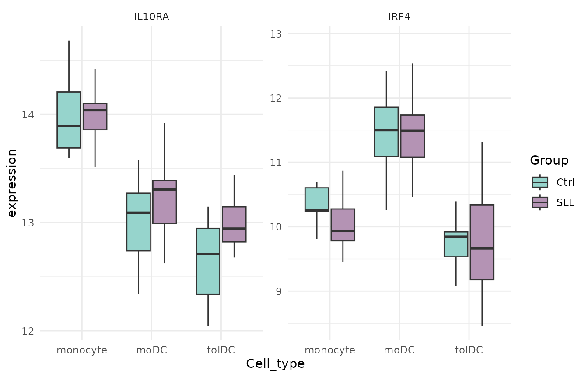
10. Paso 7: heatmap con z-scores
Un heatmap muestra muchos genes y muestras a la vez con colores. Pero cada gen tiene su propia escala (uno puede rondar 6 y otro 15), así que primero los estandarizamos con el z-score:
Un z-score de +2 significa “este gen está 2
desviaciones estándar por encima de su propio promedio en esta
muestra”. Así todos los genes quedan en la misma escala.
Calcula los z-scores sobre los datos transformados (VST), nunca sobre las cuentas crudas. Las cuentas crudas no están corregidas por profundidad de secuenciación, así que el heatmap mostraría el tamaño de librería en vez de la biología.
vsd_mat <- assay(vsd)
vsd_mat <- vsd_mat[apply(vsd_mat, 1, var) > 0, ] # quitar genes sin variación
zscore_mat <- t(scale(t(vsd_mat))) # scale() trabaja por columnas: transponemos
dim(zscore_mat)
#> [1] 13596 99
round(zscore_mat[1:4, 1:4], 2)
#> QR011_0 QR011_1 QR011_3 QR013_0
#> A1BG 1.02 0.15 2.51 0.39
#> A1BG-AS1 -0.38 -0.26 1.48 -0.48
#> A2M -1.35 1.12 0.20 -1.28
#> A2M-AS1 -0.28 0.01 -0.54 0.72Dibujamos el heatmap de un conjunto de ISG, con las muestras agrupadas por tipo celular y grupo:
isg_extended <- c("IFI27", "IFI44L", "IFI44", "USP18", "IFI6", "ISG15", "MX1", "RSAD2", "IFIT1", "OAS1")
as.data.frame(zscore_mat[isg_extended, ]) %>%
rownames_to_column("gene") %>%
pivot_longer(-gene, names_to = "sample_ID", values_to = "z") %>%
left_join(metadata_cleaned, by = "sample_ID") %>%
mutate(z = pmin(pmax(z, -2), 2)) %>% # limitar a [-2, 2] para que los extremos no dominen el color
ggplot(aes(x = sample_ID, y = gene, fill = z)) +
geom_tile() +
facet_grid(~ Cell_type + Group, scales = "free_x", space = "free_x") +
scale_fill_gradient2(low = "steelblue", mid = "white", high = "firebrick") +
labs(x = "Muestras", y = NULL, fill = "z-score") +
theme_minimal() +
theme(axis.text.x = element_blank(), panel.grid = element_blank(),
strip.text = element_text(size = 7))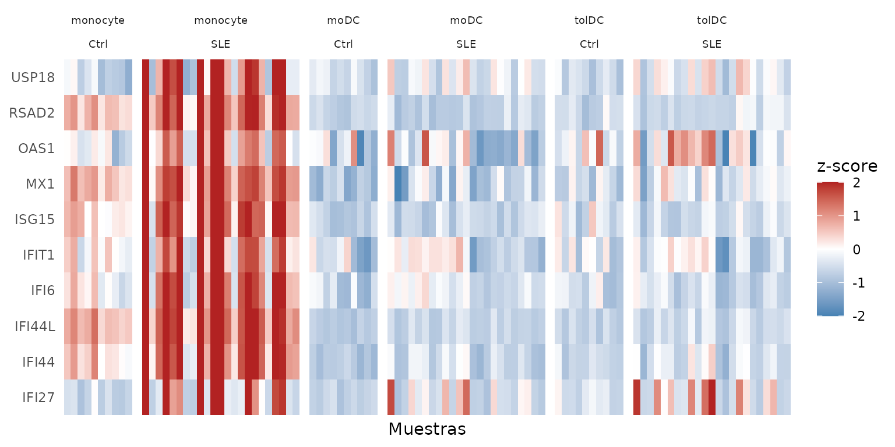
Las columnas rojas en monocyte / SLE son la
firma de interferón: los 10 genes suben
juntos en las mismas pacientes. También se ve que no
todas las pacientes la tienen; volveremos a esto en el PCA.
11. Paso 8: análisis de componentes principales (PCA)
11.1 ¿Qué es un PCA?
Cada muestra está descrita por miles de genes, y no podemos graficar miles de dimensiones. El PCA busca las direcciones en las que las muestras se diferencian más y las resume en unos pocos ejes:
- PC1 es el eje que captura la mayor parte de la variación.
- PC2 captura la mayor parte de la variación que queda, y así sucesivamente.
Es como tomar una foto de un objeto en 3D desde el ángulo que mejor muestra su forma. Si dos muestras quedan cerca en el PCA, sus perfiles de expresión se parecen.
11.2 Calcular el PCA
Usamos todos los genes que pasaron el filtro. Como vamos a repetir el cálculo, lo guardamos en una función:
calc_pca <- function(vsd_obj) {
pca <- prcomp(t(assay(vsd_obj))) # prcomp() quiere muestras en filas, genes en columnas
list(
data = cbind(as.data.frame(pca$x[, 1:2]), as.data.frame(colData(vsd_obj))),
variance = round(100 * pca$sdev^2 / sum(pca$sdev^2), 2) # % de varianza por PC
)
}
pca_all <- calc_pca(vsd)
head(pca_all$variance)
#> [1] 63.44 9.51 3.71 2.62 2.05 1.94¿Cuánta información guarda cada componente? Lo vemos en un scree plot:
scree_df <- data.frame(
component = seq_along(pca_all$variance),
variance = pca_all$variance,
label = paste0("PC", seq_along(pca_all$variance), ": ", pca_all$variance, "%")
)
ggplot(scree_df, aes(x = component, y = variance)) +
geom_point(color = "steelblue", size = 3) +
geom_line(color = "steelblue") +
geom_text_repel(data = scree_df[1:4, ], aes(label = label), # etiquetas solo en PC1-PC4
size = 5, box.padding = unit(0.35, "lines"),
point.padding = unit(0.3, "lines"),
color = "darkred", fontface = "bold") +
labs(title = "Scree plot: varianza explicada por PCA",
x = "Componente principal",
y = "Porcentaje de varianza explicada") +
theme_minimal()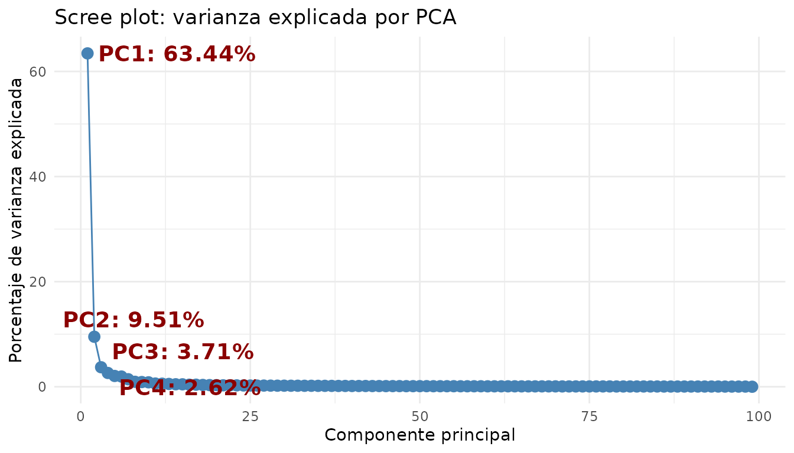
PC1 y PC2 juntos explican casi tres cuartas partes de la variación; a partir de PC3 cada componente aporta muy poco. Bastará con graficar los dos primeros.
11.3 Graficar el PCA
ggplot(pca_all$data, aes(x = PC1, y = PC2, color = Cell_type)) +
stat_ellipse() +
geom_point(aes(shape = Group), size = 3) +
scale_color_manual(values = cell_color) +
scale_shape_manual(values = c(Ctrl = 1, SLE = 17)) +
labs(x = paste0("PC1 (", pca_all$variance[1], "%)"),
y = paste0("PC2 (", pca_all$variance[2], "%)"),
color = "Tipo celular", shape = "Grupo") +
theme_light()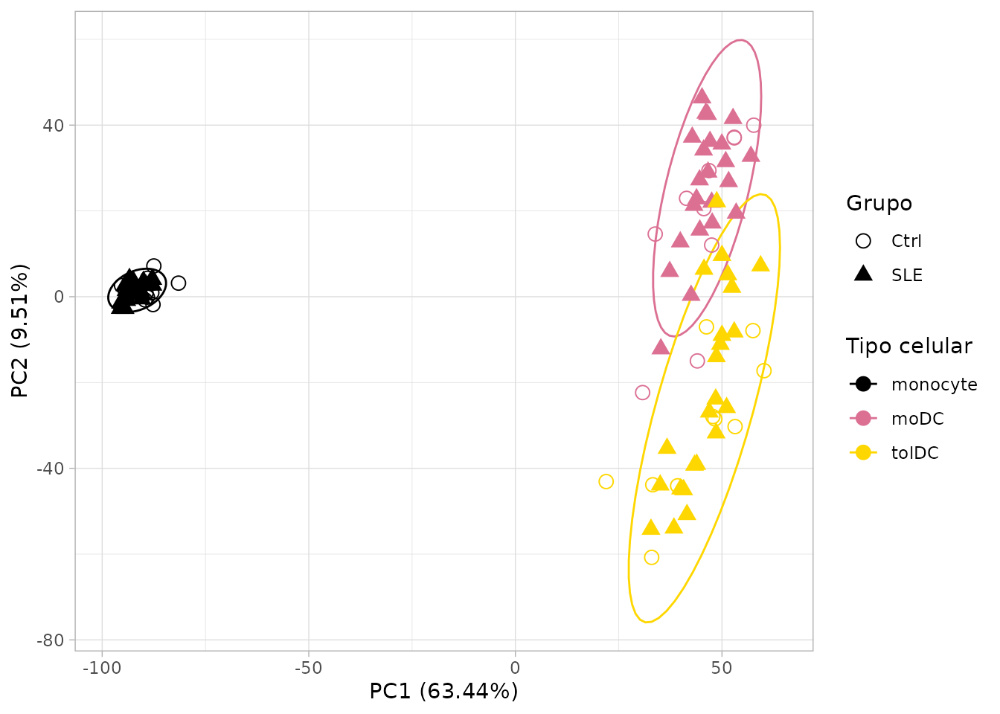
¿Qué nos dice?
- PC1 separa a los monocitos de las células dendríticas: la diferenciación cambia por completo el perfil de expresión.
- PC2 separa a las moDC de las tolDC.
- Controles y pacientes se mezclan dentro de cada tipo celular.
Conclusión: el tipo celular es, por mucho, la mayor fuente de variación. El efecto del lupus es más sutil y queda “tapado”.
¿Todos los genes o solo los más variables? Muchos tutoriales calculan el PCA solo con los 500 genes más variables. Esa elección cambia el resultado: con 500 genes, PC1 explica alrededor del 80% de la variación; con todos, alrededor del 63%. Aquí usamos todos los genes. Siempre reporta cuántos genes usaste.
11.4 Mirar dentro de un solo tipo celular
Para ver el efecto del lupus hay que quitar la variación del tipo celular. Repitamos el PCA solo con los monocitos, que es donde vimos la firma de interferón:
pca_mono <- calc_pca(vsd[, vsd$Cell_type == "monocyte"])
ggplot(pca_mono$data, aes(x = PC1, y = PC2, color = Group)) +
stat_ellipse() +
geom_point(size = 3) +
scale_color_manual(values = group_color) +
labs(x = paste0("PC1 (", pca_mono$variance[1], "%)"),
y = paste0("PC2 (", pca_mono$variance[2], "%)"),
color = "Grupo", title = "PCA: solo monocitos") +
theme_light()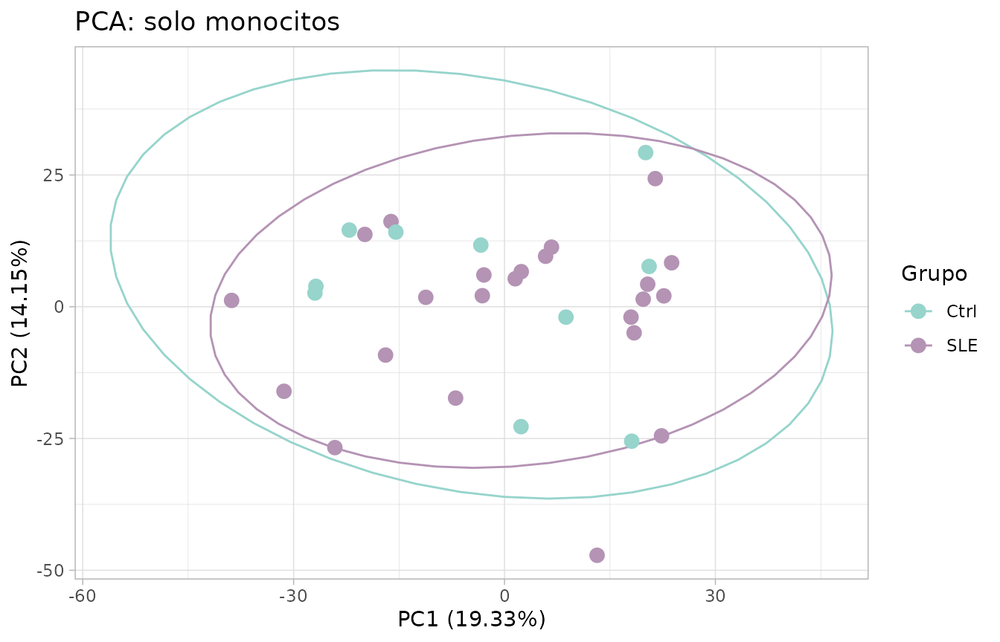
Sorpresa: aun así, controles y pacientes se mezclan. ¿Quiere decir que no hay diferencias? No. Recuerda que en la sección 9.2 solo una parte de las pacientes tenía la firma de interferón elevada. Comprobémoslo resumiendo los 10 ISG del heatmap en un solo número por muestra, la puntuación de firma de interferón (el promedio de sus z-scores):
pca_mono$data$ifn_score <- colMeans(zscore_mat[isg_extended, rownames(pca_mono$data)])
ggplot(pca_mono$data, aes(x = PC1, y = PC2, color = ifn_score, shape = Group)) +
geom_point(size = 3) +
scale_color_gradient2(low = "steelblue", mid = "grey85", high = "firebrick") +
scale_shape_manual(values = c(Ctrl = 1, SLE = 17)) +
labs(x = paste0("PC1 (", pca_mono$variance[1], "%)"),
y = paste0("PC2 (", pca_mono$variance[2], "%)"),
color = "Firma de\ninterferón", shape = "Grupo", title = "PCA: solo monocitos") +
theme_light()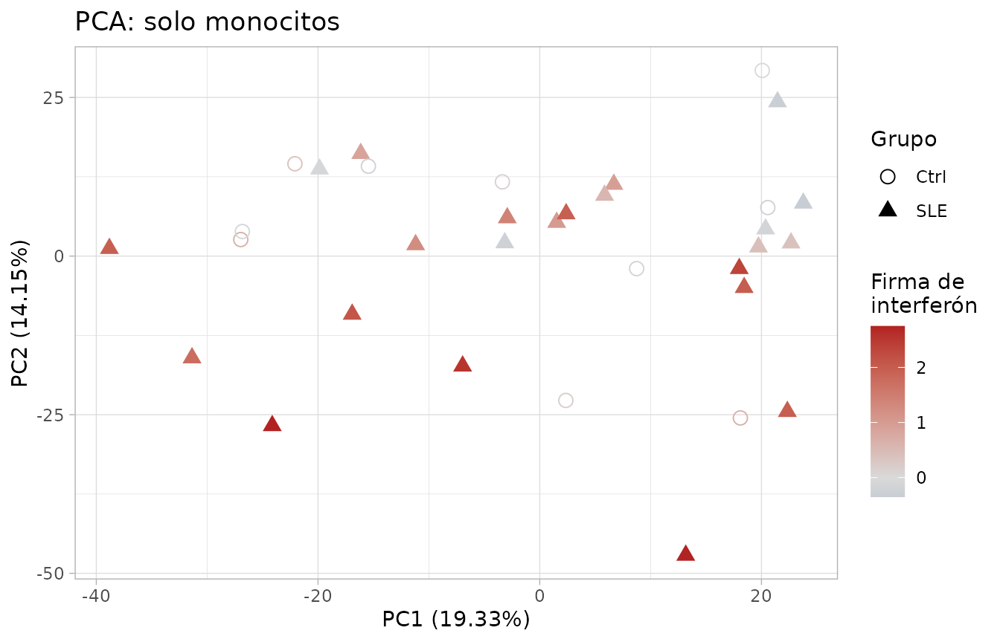
¡Ahora sí aparece un patrón! PC2 se relaciona con la firma de interferón: las pacientes con la firma más alta (rojo) tienden a quedar en la parte de abajo. Aprendimos tres cosas:
- El PCA muestra las mayores fuentes de variación, que no siempre coinciden con los grupos que nos interesan.
- El lupus es heterogéneo: algunas pacientes tienen una firma de interferón fuerte y otras se parecen a los controles.
- Que dos grupos no se separen en un PCA no significa que no tengan genes diferentes.
11.5 Retos: ¿qué otras variables explican la variación?
El PCA sirve para preguntarle a los datos qué variables se asocian con las diferencias entre muestras. Colorear los puntos por distintas variables es la forma más rápida de hacerlo. Ahora te toca a ti.
Reto 3. Actividad de la enfermedad. Colorea el PCA
de todas las muestras (pca_all) por
SLEDAI_category (actividad del lupus según el índice
SLEDAI) y dibuja una elipse para cada tipo celular. ¿Las muestras de
pacientes con enfermedad activa se separan de las demás?
Pistas:
-
SLEDAI_categoryya está enpca_all$data, porque viene de los metadatos. - Colorea los puntos con
aes(color = SLEDAI_category)y agrega las elipses constat_ellipse(aes(color = Cell_type)).
Ver solución
# Colores: tipos celulares (elipses) y actividad (puntos)
sledai_colors <- c(
cell_color,
"Activity" = "#FC8D62",
"No_activity" = "#8DA0CB",
"Zero" = "#66C2A5"
)
ggplot(pca_all$data, aes(x = PC1, y = PC2, color = SLEDAI_category)) +
geom_point(aes(shape = Group), size = 3.5) +
stat_ellipse(aes(color = Cell_type)) +
scale_shape_manual(values = c(Ctrl = 0, SLE = 17)) +
scale_color_manual(values = sledai_colors, breaks = names(sledai_colors)) +
labs(x = sprintf("PC1 (%.2f%%)", pca_all$variance[1]),
y = sprintf("PC2 (%.2f%%)", pca_all$variance[2]),
color = "SLEDAI",
shape = "Grupo") +
theme_light() +
theme(plot.background = element_rect(fill = "white"),
text = element_text(size = 12),
axis.title = element_text(size = 12),
legend.title = element_text(size = 12),
legend.text = element_text(size = 12),
legend.key.size = unit(1.5, "lines"))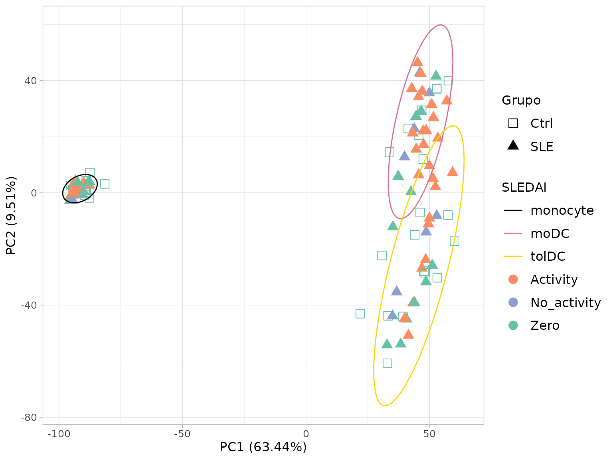
Dentro de cada tipo celular, los colores aparecen mezclados: la
actividad de la enfermedad no separa a las muestras tanto como el tipo
celular. Observa también que los controles aparecen como
Zero, porque no tienen lupus.
Reto 4. Fecha de toma de muestra (efecto de lote). Las voluntarias se reclutaron a lo largo de nueve meses. Si en cada fecha cambió algo técnico (el lote de reactivos, la persona que procesó las células, la corrida de secuenciación), las muestras pueden parecerse por la fecha en que se tomaron y no por su biología. A esto se le llama efecto de lote.
Colorea el PCA de todas las muestras (pca_all) por la
fecha de toma de muestra (Time_of_recruitment) y dibuja una
elipse para cada tipo celular.
Pistas:
- La fecha está en
volunteer_info(una fila por voluntaria) y el PCA tiene una fila por muestra. Únelos conleft_join()usando la columna llaveVolunteer_ID. - Colorea los puntos por fecha con
aes(color = ...)y agrega las elipses constat_ellipse(aes(color = Cell_type)).
Ver solución
# 1. Fecha de toma de muestra de cada voluntaria, como texto ("June 2022")
recruitment <- volunteer_info %>%
dplyr::select(Volunteer_ID, Time_of_recruitment) %>%
mutate(Date_sample = paste(month.name[as.integer(format(Time_of_recruitment, "%m"))],
format(Time_of_recruitment, "%Y")))
# 2. Unir la fecha a cada muestra del PCA
pca_all_date <- left_join(pca_all$data, recruitment, by = "Volunteer_ID")
# 3. Colores: tipos celulares (elipses) y fechas (puntos)
date_colors <- c(
cell_color,
"June 2022" = "#66C2A5",
"July 2022" = "#8DA0CB",
"August 2022" = "#FC8D62",
"September 2022" = "#E78AC3",
"October 2022" = "#A6D854",
"December 2022" = "#FFD92F",
"January 2023" = "#E5C494",
"February 2023" = "#B3B3B3"
)
# 4. Gráfica
p_date <- ggplot(pca_all_date, aes(x = PC1, y = PC2, color = Date_sample)) +
geom_point(aes(shape = Group), size = 3.5) +
stat_ellipse(aes(color = Cell_type)) +
scale_shape_manual(values = c(Ctrl = 0, SLE = 17)) +
scale_color_manual(values = date_colors, breaks = names(date_colors)) +
labs(x = sprintf("PC1 (%.2f%%)", pca_all$variance[1]),
y = sprintf("PC2 (%.2f%%)", pca_all$variance[2]),
color = "Fecha de muestra",
shape = "Grupo") +
theme_light() +
theme(plot.background = element_rect(fill = "white"),
text = element_text(size = 12),
axis.title = element_text(size = 12),
legend.title = element_text(size = 12),
legend.text = element_text(size = 12),
legend.key.size = unit(1.5, "lines"))
p_date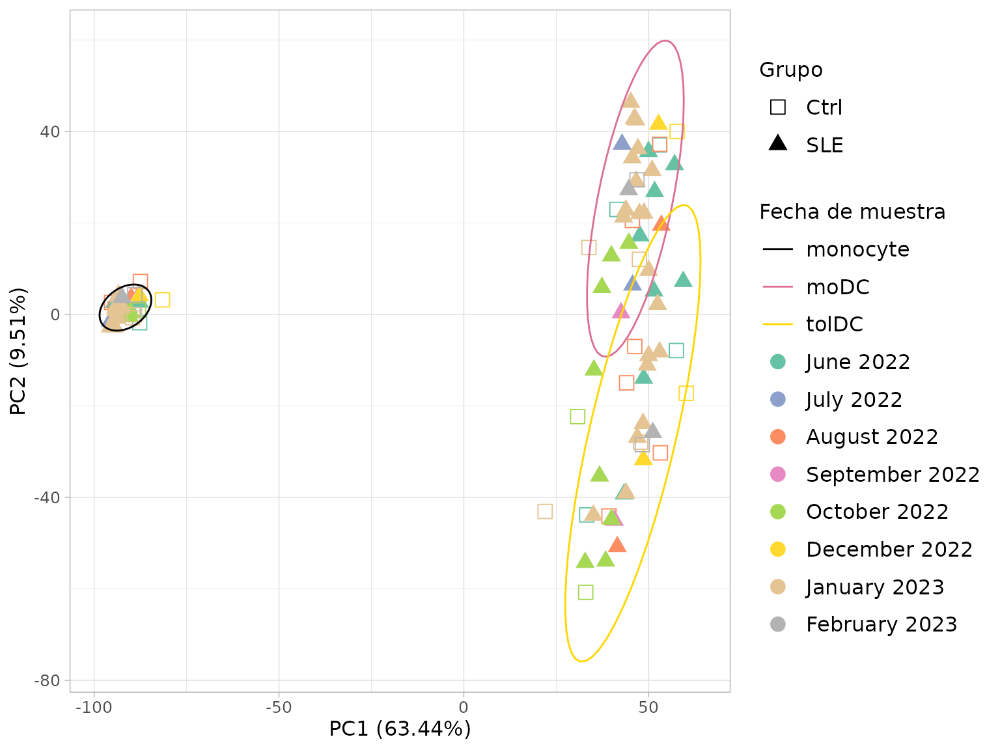
Al planear un estudio, procura reclutar controles y pacientes en las mismas fechas. Así el lote y el grupo no se confunden.
11.6 Para terminar: la figura del artículo
Juntemos los tres PCA en un solo panel, tal como aparecen en el
artículo original. Ya tenemos el de fecha (p_date, del Reto
4); construimos los otros dos con el mismo estilo:
- A. Tipo celular, el PCA de la sección 11.3.
-
C. Actividad de la enfermedad. Usamos la columna
SLEDAIdevolunteer_info, codificada así:1= con actividad (SLEDAI ≥ 6 puntos),0= sin actividad o con actividad baja (0–5 puntos) yNA= controles.
# Estilo común para los paneles
pca_theme <- theme_light() +
theme(plot.background = element_rect(fill = "white"),
text = element_text(size = 12),
axis.title = element_text(size = 12),
legend.title = element_text(size = 12),
legend.text = element_text(size = 12),
legend.key.size = unit(1.5, "lines"))
pca_labels <- labs(x = sprintf("PC1 (%.2f%%)", pca_all$variance[1]),
y = sprintf("PC2 (%.2f%%)", pca_all$variance[2]))
# A. Tipo celular
p_cell <- ggplot(pca_all$data, aes(x = PC1, y = PC2, color = Cell_type)) +
geom_point(aes(shape = Group), size = 3.5) +
stat_ellipse() +
scale_shape_manual(values = c(Ctrl = 0, SLE = 17)) +
scale_color_manual(values = cell_color) +
pca_labels +
labs(color = "Tipo celular", shape = "Grupo") +
pca_theme
# C. Actividad SLEDAI (1 / 0 / NA), unida desde volunteer_info
pca_all_sledai <- pca_all$data %>%
left_join(dplyr::select(volunteer_info, Volunteer_ID, SLEDAI), by = "Volunteer_ID") %>%
mutate(SLEDAI = ifelse(is.na(SLEDAI), "NA", as.character(SLEDAI)))
sledai_article_colors <- c(cell_color, "1" = "#FC8D62", "0" = "#8DA0CB", "NA" = "#66C2A5")
p_sledai <- ggplot(pca_all_sledai, aes(x = PC1, y = PC2, color = SLEDAI)) +
geom_point(aes(shape = Group), size = 3.5) +
stat_ellipse(aes(color = Cell_type)) +
scale_shape_manual(values = c(Ctrl = 0, SLE = 17)) +
scale_color_manual(values = sledai_article_colors, breaks = names(sledai_article_colors)) +
pca_labels +
labs(color = "SLEDAI", shape = "Grupo") +
guides(shape = guide_legend(order = 1)) + # "Grupo" primero, como en A y B
pca_theme
# Panel A, B, C
figure_s2 <- plot_grid(p_cell, p_date, p_sledai,
labels = c("A", "B", "C"), label_size = 18,
nrow = 1, align = "h", axis = "tb")
figure_s2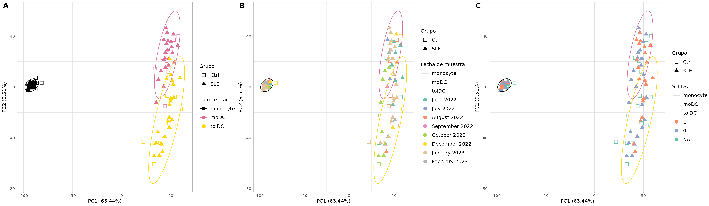
Figura suplementaria S2. Análisis de componentes principales (PCA) de las cuentas de RNA-seq normalizadas. (A) PCA coloreado por tipo celular (monocitos, moDC y tolDC) y con forma según el grupo (SLE y Ctrl); muestra una separación clara, impulsada principalmente por la identidad celular. (B) PCA con las fechas de toma de muestra, para evaluar posibles efectos de lote entre colectas; no se observa una agrupación importante por fecha. (C) PCA coloreado por actividad de la enfermedad (SLEDAI): 1 indica actividad (puntaje SLEDAI ≥ 6), 0 indica sin actividad o actividad baja (0–5 puntos) y los controles se marcan como NA. PC1 y PC2 explican el 63.44% y el 9.51% de la varianza total, respectivamente. Cada punto representa una muestra. Abreviaturas: SLE, lupus eritematoso sistémico; Ctrl, control sano; mo, monocitos; moDC, células dendríticas derivadas de monocitos; tolDC, células dendríticas tolerogénicas. Los datos de esta figura se encuentran en la Tabla suplementaria S1 y el Dataset S2.
La figura suplementaria original se encuentra en el archivo Data Sheet 1.docx del material suplementario del artículo.
Para guardar la figura en alta resolución:
ggsave("Figura_S2_PCA.png", figure_s2, width = 24, height = 7, dpi = 300)12. Guardar tus resultados (opcional)
saveRDS(dds, "dds.rds") # objeto DESeq2 con cuentas filtradas
saveRDS(vsd, "vsd.rds") # datos transformados (VST)
write.csv(zscore_mat, "zscore.csv") # z-scores para heatmaps en otros programasPara volver a cargarlos:
dds <- readRDS("dds.rds").
Checkpoint. No necesitas guardar nada para continuar: el paquete ya incluye los dos objetos principales de esta lección, con los mismos nombres. En las siguientes lecciones bastará con cargar el paquete:
-
dds: elDESeqDataSetfiltrado y normalizado (sección 7). -
zscore_mat: la matriz de z-scores (sección 10).
13. Resumen
| Paso | Función clave | ¿Para qué? |
|---|---|---|
| Conocer los datos |
dim(), dplyr::count()
|
Entender qué tenemos antes de analizar |
| Verificar el orden | all(colnames(...) == ...) |
Evitar el error más peligroso |
| Crear el objeto | DESeqDataSetFromTximport() |
Juntar cuentas, metadatos y diseño |
| Filtrar | rowSums(counts(dds) >= 10) >= 10 |
Quitar genes con poca información |
| Normalizar | estimateSizeFactors() |
Corregir profundidad y longitud |
| Transformar | vst() |
Estabilizar la varianza para visualizar |
| Explorar genes |
ggplot() + facet_wrap()
|
Verificar la biología y generar hipótesis |
| Heatmap |
scale() (z-score) |
Ver patrones de muchos genes a la vez |
| PCA |
prcomp() + ggplot()
|
Ver la estructura global de los datos |
| Panel de figuras | cowplot::plot_grid() |
Combinar varias gráficas en una figura |
| Unir tablas | left_join() |
Añadir a cada muestra la información de su voluntaria |
| Revisar lotes | PCA coloreado por fecha (Reto 4) | Detectar variación técnica antes de comparar grupos |
Errores comunes de principiante
- No verificar que las muestras coincidan entre cuentas y metadatos.
-
Pasarle cuentas normalizadas a
DESeq(): usa siempre las crudas. - Calcular z-scores o PCA con cuentas crudas: usa VST.
- Tratar como independientes las muestras de una misma paciente.
- Confundir “se ve diferente en la gráfica” con “es significativo”.
- No revisar efectos de lote antes de comparar grupos.
14. Próximos pasos
El siguiente paso es el análisis de expresión
diferencial: identificar, con un modelo estadístico, qué genes
cambian entre pacientes y controles dentro de cada tipo celular. Lo
abordamos en la lección Genes diferencialmente
expresados entre pacientes y controles con las funciones
DESeq() y results() de DESeq2. Un
buen diseño debe considerar el tipo celular, el lote de toma de muestra
y el pareo de las muestras de una misma voluntaria.
Para continuar, da clic en el botón Siguiente lección: Genes diferencialmente expresados al final de esta página.
Recursos complementarios:
- La viñeta oficial de DESeq2.
- El flujo de trabajo RNA-seq workflow de Bioconductor.
Referencias
- Love MI, Huber W, Anders S (2014). Moderated estimation of fold change and dispersion for RNA-seq data with DESeq2. Genome Biology 15:550. doi:10.1186/s13059-014-0550-8
- Soneson C, Love MI, Robinson MD (2015). Differential analyses for RNA-seq: transcript-level estimates improve gene-level inferences. F1000Research 4:1521. doi:10.12688/f1000research.7563.2
- Patro R, et al. (2017). Salmon provides fast and bias-aware quantification of transcript expression. Nature Methods 14:417–419. doi:10.1038/nmeth.4197
- Hernández-Ledesma AL, Coss-Navarrete EL, et al (2026) Gene expression profiling of dendritic cell tolerance dysfunction in women with systemic lupus erythematosus. Front. Immunol. 17:1771959. doi: 10.3389/fimmu.2026.1771959.
Información de la sesión
sessionInfo()
#> R version 4.6.1 (2026-06-24)
#> Platform: x86_64-pc-linux-gnu
#> Running under: Ubuntu 24.04.5 LTS
#>
#> Matrix products: default
#> BLAS: /usr/lib/x86_64-linux-gnu/openblas-pthread/libblas.so.3
#> LAPACK: /usr/lib/x86_64-linux-gnu/openblas-pthread/libopenblasp-r0.3.26.so; LAPACK version 3.12.0
#>
#> locale:
#> [1] LC_CTYPE=C.UTF-8 LC_NUMERIC=C LC_TIME=C.UTF-8
#> [4] LC_COLLATE=C.UTF-8 LC_MONETARY=C.UTF-8 LC_MESSAGES=C.UTF-8
#> [7] LC_PAPER=C.UTF-8 LC_NAME=C LC_ADDRESS=C
#> [10] LC_TELEPHONE=C LC_MEASUREMENT=C.UTF-8 LC_IDENTIFICATION=C
#>
#> time zone: UTC
#> tzcode source: system (glibc)
#>
#> attached base packages:
#> [1] stats4 stats graphics grDevices utils datasets methods
#> [8] base
#>
#> other attached packages:
#> [1] cowplot_1.2.0 ggrepel_0.9.8
#> [3] lubridate_1.9.5 forcats_1.0.1
#> [5] stringr_1.6.0 dplyr_1.2.1
#> [7] purrr_1.2.2 readr_2.2.0
#> [9] tidyr_1.3.2 tibble_3.3.1
#> [11] ggplot2_4.0.3 tidyverse_2.0.0
#> [13] DESeq2_1.52.0 SummarizedExperiment_1.42.0
#> [15] Biobase_2.72.0 MatrixGenerics_1.24.0
#> [17] matrixStats_1.5.0 GenomicRanges_1.64.0
#> [19] Seqinfo_1.2.0 IRanges_2.46.0
#> [21] S4Vectors_0.50.3 BiocGenerics_0.58.1
#> [23] generics_0.1.4 GeneExprLupusMx_0.1.0.9000
#>
#> loaded via a namespace (and not attached):
#> [1] gtable_0.3.6 xfun_0.62 bslib_0.12.0
#> [4] lattice_0.22-9 tzdb_0.5.0 vctrs_0.7.3
#> [7] tools_4.6.1 parallel_4.6.1 pkgconfig_2.0.3
#> [10] Matrix_1.7-5 RColorBrewer_1.1-3 S7_0.2.2
#> [13] desc_1.4.3 lifecycle_1.0.5 compiler_4.6.1
#> [16] farver_2.1.2 textshaping_1.0.5 codetools_0.2-20
#> [19] htmltools_0.5.9 sass_0.4.10 yaml_2.3.12
#> [22] pkgdown_2.2.1 pillar_1.11.1 jquerylib_0.1.4
#> [25] MASS_7.3-65 BiocParallel_1.46.0 DelayedArray_0.38.2
#> [28] cachem_1.1.0 abind_1.4-8 nlme_3.1-169
#> [31] tidyselect_1.2.1 locfit_1.5-9.12 digest_0.6.39
#> [34] stringi_1.8.9 splines_4.6.1 labeling_0.4.3
#> [37] fastmap_1.2.0 grid_4.6.1 cli_3.6.6
#> [40] SparseArray_1.12.3 magrittr_2.0.5 S4Arrays_1.12.1
#> [43] utf8_1.2.6 withr_3.0.3 scales_1.4.0
#> [46] timechange_0.4.0 rmarkdown_2.32 XVector_0.52.0
#> [49] otel_0.2.0 hms_1.1.4 ragg_1.5.2
#> [52] evaluate_1.0.5 knitr_1.52 mgcv_1.9-4
#> [55] rlang_1.3.0 Rcpp_1.1.2 glue_1.8.1
#> [58] jsonlite_2.0.0 R6_2.6.1 systemfonts_1.3.2
#> [61] fs_2.1.0